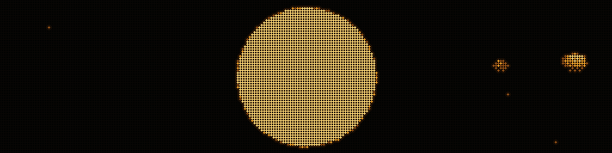
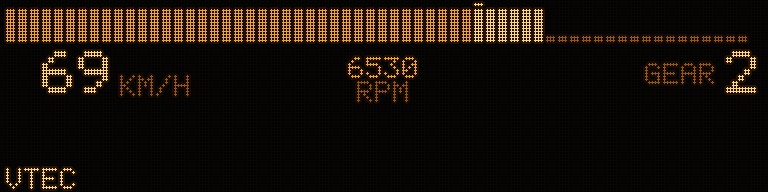
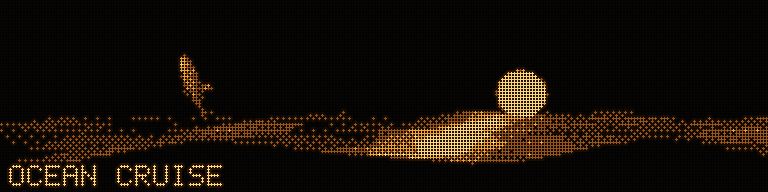
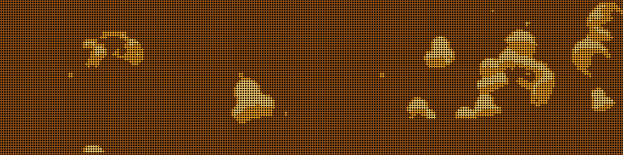
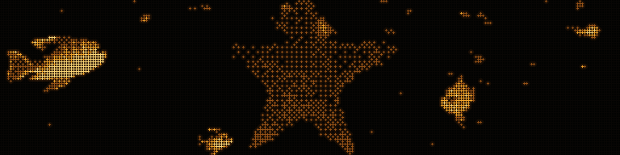
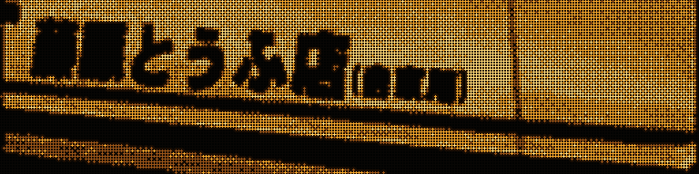

Animations you make yourself, in pure Python — no GPU, no Blender.
They play on the PC deck and on the hardware. Same file, same decoder,
same dots. Each of these solves a different version of one problem: four
brightness levels is not many.

SOLAR — thirteen stops from the Sun to Pluto, labels drawn from
the deck's own character ROM so the text belongs to the same panel as
everything else. tools/movies/scene_solar.pyTOUGE — a night run where the headlights are the only light
source in the scene, so the road fades to black by itself and the subject is
the hole in the light. tools/movies/scene_touge.py

VTEC — a bar tachometer, because the car this is drawn from uses
a bar rather than a dial, and a bar is a 4:1 strip. The revs are a crude
engine with load and a limiter rather than a waveform: the hesitation at the top
of a gear is what makes it read as driving.
tools/movies/scene_vtec.py

DOLPHINS — the classic screensaver rebuilt with a real mesh and
a real sea surface. The sea is shaded on a steep curve so only crests glint
and the animals own the bright end. tools/movies/scene_dolphins.py

DUCKS — thirty seconds, eighteen ducks, and a loop that is
exact rather than nearly: every rise, sway and bob completes a whole number of
cycles in the 300 frames, so frame 300 is frame 0 and the join is
invisible. It arrived as a five-second GIF and was drawn anyway — you cannot
add a duck to a bitmap, and the source's teal water is mid-luminance, which is
the one thing four levels cannot hold.
tools/movies/scene_ducks.py

Already have a GIF?import_gif.py converts it.
Footage needs --keep: a camera uses the whole tonal range and the
deck has four levels, so a mid-grey background becomes a checkerboard louder
than the subject. --cover --keep=25 drops the water out and hands
all four levels to the fish.

AE86 — a white car on a dark road is the ideal subject, for the
same reason TOUGE works. But this clip ends by pulling back to a wide,
where the car shrinks to a few dots and the road it is on becomes the brightest
thing in frame — so --trim=0:62 throws that part away.
import_gif.py ae86.gif --cover --keep=30 --gamma=1.4 --trim=0:62.
Look at the source before assuming all of it belongs on a 4:1 panel.SPIN — the minimal template, deliberately small. Copy it and
change the scene. tools/movies/scene_spin.py
Making one is a conversation, not a tutorial. The repository carries a
CLAUDE.md
that tells Claude the constraints — the right grid for your panel, the level
budget, why thin bright details dither into noise on 1-bit glass, why large
areas must sit on a level centre. Describe the animation you want and which
display you have; it picks the format.